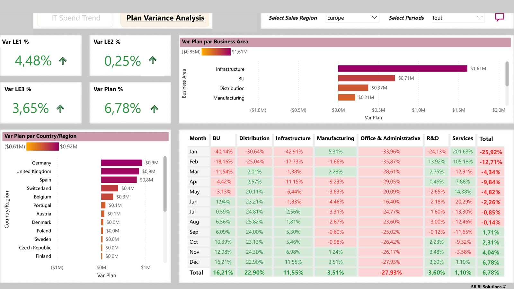
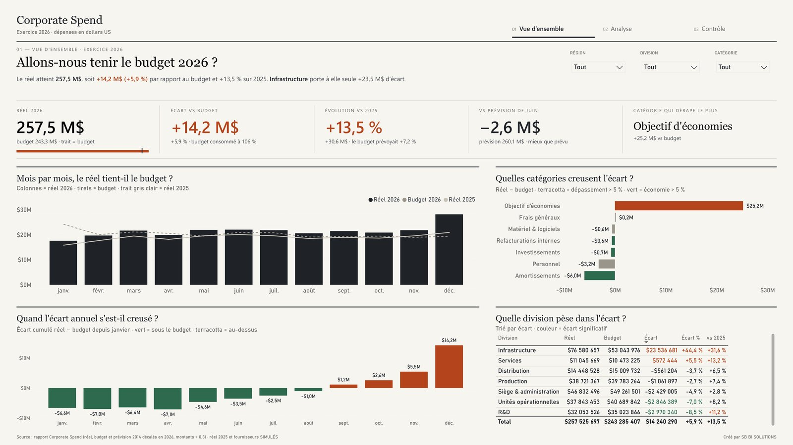
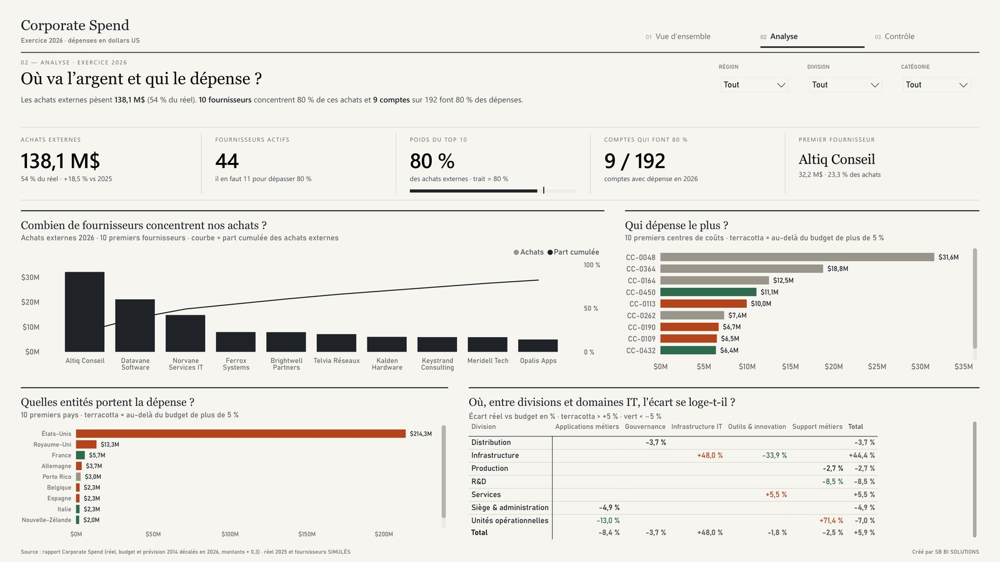
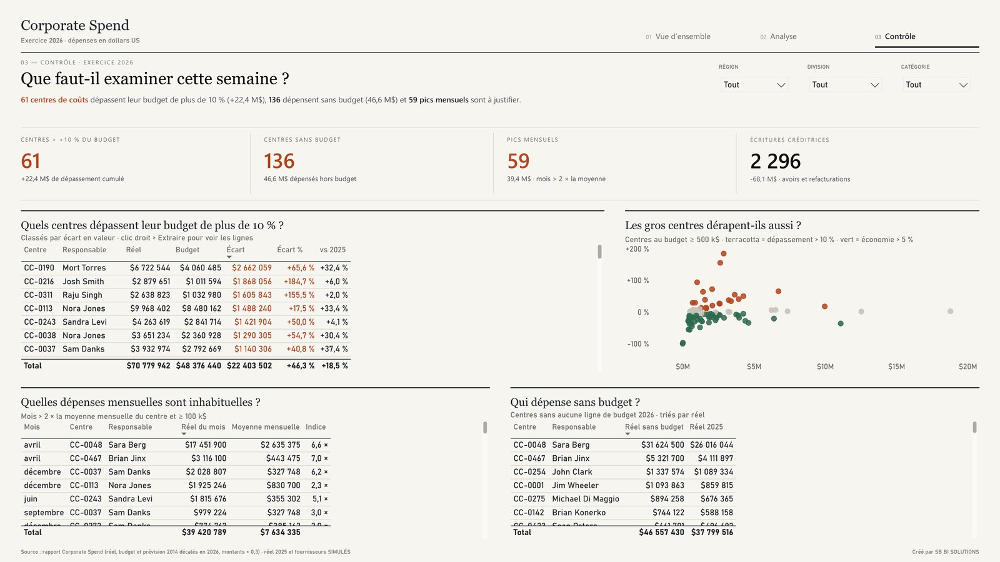

01 · AvantLe point de départ
Le rapport d'exemple Microsoft « IT Spend » : des cartes d'écart affichées en vert alors qu'elles signalent un dépassement, une matrice mois × division entièrement colorée, des montants cumulés qui faussent la lecture mois par mois.
On voit des chiffres, mais on ne sait ni où le budget dérape, ni qui dépense, ni ce qu'il faut contrôler.

02 · DémarcheCe que j'ai fait
- Analyser le modèle source : un an de données mensuelles, réel, budget et trois prévisions, sans fournisseurs ni N-1.
- Poser trois questions de direction financière : tenons-nous le budget ? Où va l'argent et qui le dépense ? Que faut-il contrôler cette semaine ?
- Ajouter un N-1 et une table de fournisseurs simulés, recalés sur les vraies lignes, puis reconstruire le modèle en étoile et 67 mesures DAX documentées.
- Un thème « registre » : papier ivoire, encre graphite, titres Georgia. La couleur sert uniquement aux écarts : terracotta pour un dépassement, vert pour une économie.
- Une infobulle personnalisée (réel, budget, écart, top 3, tendance 12 mois) et une extraction du détail exportable sur chaque visuel principal.
- Contrôles avant livraison : totaux réconciliés avec la source à 0,00 $, chaque visuel sous 2 s.
03 · RésultatCe que le rapport révèle
au-dessus du budget (+5,9 %) et +13,5 % sur 2025, alors que le budget prévoyait +7,2 %.
pour la seule division Infrastructure (+44 %) : plus que l'écart total.
dépensés par 136 centres de coûts sans aucune ligne de budget, dont 31,6 M$ pour un seul.
04 · Les pages3 pages, une question chacune



05 · VidéoLe rapport en mouvement
06 · TransparenceDonnées et limites
Données d'exemple Microsoft (IT Spend Analysis) : réel, budget et prévision de l'exercice 2014, décalés en 2026, montants × 0,3 comme dans le rapport d'origine. Le réel 2025 (N-1) et les fournisseurs (noms fictifs) sont simulés, puis rattachés aux vraies lignes de dépense ; les totaux réels ne changent pas.
Un rapport comme celui-ci pour vos dépenses ?
Je pars de vos extractions (SAP, ERP, Excel) et de vos règles de gestion, puis je construis le modèle, les mesures et les pages qui y répondent.